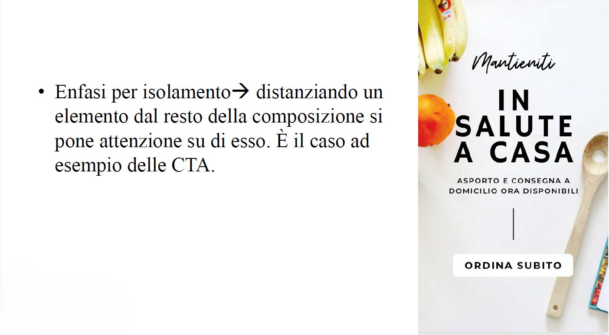

PRINCIPI DEL DESIGN
Esistono alcuni principi che se applicati alla composizione grafica
permettono di mantenere un equilibrio e una coerenza tra gli
elementi
BILANCIAMENTO
Indica l’equilibrio generato dalla distribuzione delle forme
rispetto ad un dato asse, in base al peso visivo. La composizione
comunica un senso di stabilità e di armonia.
Il bilanciamento dipende dal peso vicino, dal posizionamento e
dalla disposizione degli elementi.
Il
peso visivo non è altro che la
forza attrattiva di un elemento
nella composizione, che può essere dato ad esempio da un
contrasto di colore, dalla presenza della texture.
Il peso visivo è strettamente collegato alla posizione
dell’elemento all’interno della composizione e dalla disposizione
degli altri elementi attorno ad esso.
Ad esempio, posizionando un logo in alto al centro o in alto a
destra o in alto a sinistra, ha un peso visivo maggiore che
posizionarlo in basso.
Il bilanciamento può essere simmetrico o asimmetrico.
La simmetria assegna una distribuzione omogenea e uguale dei
pesi visivi su entrambi i lati di un asse centrale, dando una
sensazione di equilibrio.
Può essere bilaterale se viene bilanciata su assi di simmetria o
radiale se gli elementi sono distanziati rispetto ad un punto
centrale.
L’asimmetria conferisce invece una distribuzione non simmetrica
rispetto all’asse centrale della pagina.
Gli elementi si posizionano a specchio sui lati del layout e
nonostante questo risultano bilanciati.
In questo caso anche elementi di diverse dimensioni si bilanciano
l’uno con l’altro.
Ad esempio su un lato possiamo avere un elemento di grandi
dimensioni, che si bilancia con elementi molto piccoli nell’altro
lato che non infastidiscono.
GERARCHIA VISIVA
È il mezzo principale per organizzare l’informazione ed inviare
un messaggio.
La gerarchia guida l’osservatore aiutandolo a concentrarsi prima
sugli elementi a cui assegniamo maggior valore e poi sugli
elementi secondari.
La gerarchia visiva consiste infatti nell’applicare un effetto enfasi
sugli elementi principali che vengono visualizzati per primi, per
poi passare agli elementi secondari e terziari.
Enfatizzare tutti gli elementi nello stesso modo non renderà
nessuno di essi preponderante e il messaggio risulterà confuso.
Il focus point sarà il punto di partenza e l’osservatore sarà poi
guidato verso gli elementi secondari.
Come rendere un elemento più preponderante?
Vediamo alcune strategie.
